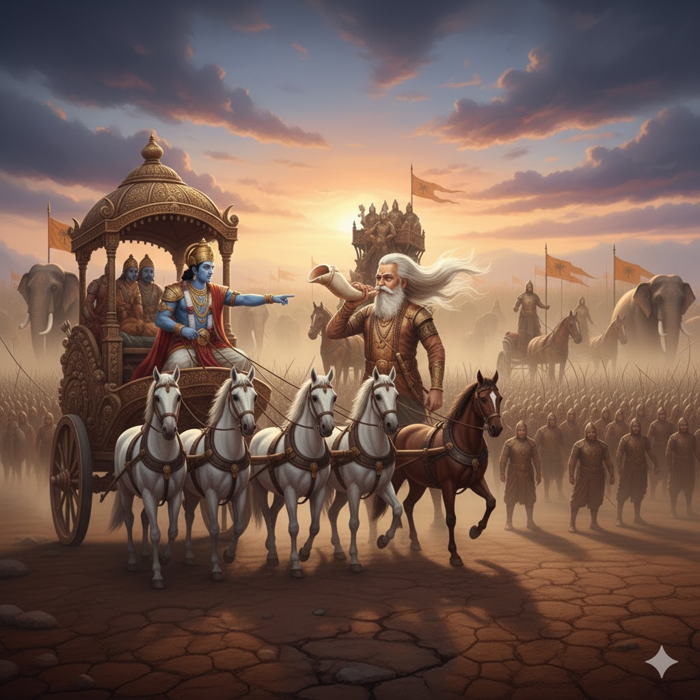

সরল ভাবার্থ
ভীষ্ম, দ্রোণাচার্য এবং বিশ্বের সকল রাজাদের সামনে রথটি রেখে শ্রীকৃষ্ণ বললেন— হে পার্থ! এখানে সমবেত কুরুবংশীয়দের দর্শন করো।
বিস্তারিত ধর্মীয় ব্যাখ্যা
শ্রীকৃষ্ণ এখানে কেবল রথ চালক নন, তিনি একজন সূক্ষ্ম মনস্তত্ত্ববিদ। তিনি রথটি এমন জায়গায় রাখলেন যেখানে ঠিক সামনেই ছিলেন পিতামহ ভীষ্ম এবং আচার্য দ্রোণ। তিনি অর্জুনকে বললেন—'পশ্যৈতান্' অর্থাৎ 'এদের দেখো'। শ্রীকৃষ্ণ জানতেন যে অর্জুনের দুর্বলতা কোথায়। তিনি যদি রথটি দুর্যোধন বা দুঃশাসনের সামনে রাখতেন, তবে অর্জুন হয়তো ক্রোধে যুদ্ধ শুরু করে দিতেন। কিন্তু ভীষ্ম ও দ্রোণ ছিলেন অর্জুনের সবচাইতে শ্রদ্ধার মানুষ। শ্রীকৃষ্ণ ইচ্ছাকৃতভাবে অর্জুনকে 'কুরুবংশীয়দের' দেখতে বললেন, 'শত্রুদের' নয়। 'কুরু' শব্দটির মাধ্যমে তিনি অর্জুনকে মনে করিয়ে দিলেন যে এরা সবাই তাঁর নিজের রক্ত।
ধর্মীয় বিচারে এটি ভগবানের এক লীলা। তিনি চেয়েছিলেন অর্জুনের ভেতরের সমস্ত মোহ ও বিষাদ বেরিয়ে আসুক, কারণ পরিষ্কার না হলে সেখানে জ্ঞানের আলো প্রবেশ করতে পারে না। শ্রীকৃষ্ণের এই ছোট্ট একটি বাক্য—'কুরুদের দেখো'—অর্জুনের মনের বাঁক বদলে দিল। মহীক্ষিতাম্ বা রাজাদের ভিড়ে অর্জুন কেবল আপনজনদেরই দেখতে পেলেন। এই শ্লোকটি আমাদের শেখায় যে, আমাদের জীবনেও মায়া এভাবেই কাজ করে। যখন আমরা ন্যায়ের জন্য কঠোর হতে চাই, তখন মায়া আমাদের ব্যক্তিগত আবেগ ও সম্পর্কের কথা মনে করিয়ে দিয়ে দুর্বল করে দেয়। শ্রীকৃষ্ণ অর্জুনকে এক ভয়াবহ মানসিক পরীক্ষার মুখোমুখি দাঁড় করিয়ে দিলেন। যে অর্জুন কিছুক্ষণ আগে গাণ্ডীব ধনুক তুলে নিয়েছিলেন, তিনি এখন তাঁর পূজনীয়দের দেখে স্তব্ধ হয়ে গেলেন। এই শ্লোকটি থেকেই অর্জুনের সেই বিষাদ যোগের শুরু, যা শেষ পর্যন্ত এক মহান আধ্যাত্মিক বিপ্লবে পরিণত হয়েছিল। ভগবান যখন আমাদের সত্যের সামনে দাঁড় করান, তখন সেটি সবসময় আরামদায়ক হয় না, কিন্তু সেটিই আমাদের মুক্তির একমাত্র পথ।

[ছবি: শ্রীকৃষ্ণ হাত দিয়ে অর্জুনকে সামনে বসা সাদা দাড়িওয়ালা পিতামহ ভীষ্ম এবং অস্ত্রধারী দ্রোণাচার্যকে দেখাচ্ছেন।]